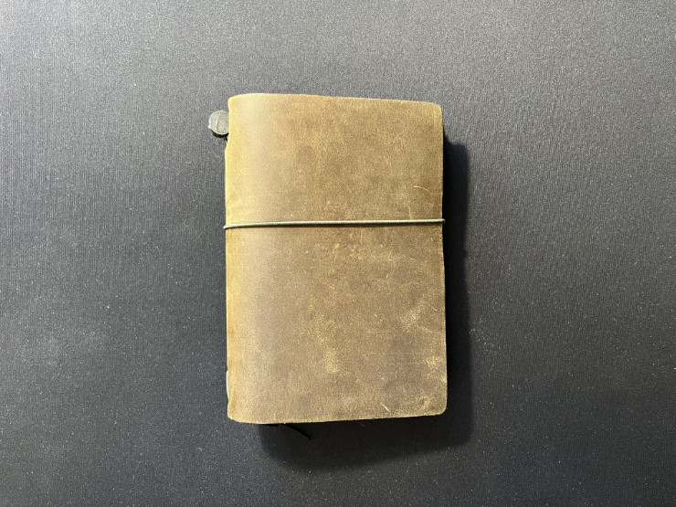

Traveler's Notebook Passport Size
I may have just found a perfect notebook. As an avid writer who loves analogue experience, I have been using paper notebooks extensively for many years. I keep several notebooks in use, one for every major topic: work, writing, photography, drawing, gaming, etc. This compartmentalisation allows me to work independently on any topic, without the distraction of others, which improves my focus and makes it much easier to find any required information. There is one big caveat, though: when I’m on the move, I need to decide in advance what I will be working on and put appropriate notebook or notebooks in my bag. This quickly gets out of hand for two reasons. First, I often overestimate the amount of free time or the number of things I would be working on, leading to taking too many notebooks, of which some are never used during my trip. Secondly, since I use hardcover notebooks with fountain pen friendly paper, their weight quickly adds up and reaches a level that is not comfortable. Therefore, on most occasions I am forced to leave some notebooks behind and only take what I consider necessity for the given journey.
This system works relatively well, although more than once I found myself regretting not taking a particular notebook with me, because I not only had a time to work on a topic (which on its own is quite rare), I had internal motivation to do so (which is even rarer). Luckily for me, one Summer evening I stumbled across an article explaining the concept of traveler’s notebooks. They work in a different way to regular notebooks I have been using for years. Instead of having many hardcover notebooks that are physically separated, a traveler’s notebook takes a form of a single leather cover, in which one can bound several softcover inserts (usually by securing them with a rubber band). Each of the inserts acts as a separate notebook, but since they are bound in a single leather cover, they occupy less space and are lighter than separate hardcover notebooks. That’s due to their size (usually somewhat smaller and thinner than a standard A5 notebook) and the lack of a hardcover (inserts have cover made of craft paper or flat cardboard, which makes them thinner).
 My first Traveler’s Notebook, in Passport Size. The leather ages beautifully, showing all tiny scuffs and marks from everyday use.
When I learned about the specifics of a traveler’s notebook system, I immediately knew it had potential to vastly improve my experience. Now, instead of taking a couple of heavy hardcover notebooks with me, I could take a single traveler’s notebook with a couple of inserts and be done with it. What is even better, one can easily swap inserts in a couple of seconds, so I could adjust the content of the traveler’s notebook depending on what I am doing or where I am travelling.
However, switching to a traveler’s notebook system can be quite expensive. There are many brands of traveler’s notebooks, with different notebook format, inserts and, most of all, prices. After a careful deliberation, supported by watching a dozen of hours of reviews, I decided to go with the original Traveler’s Notebook1, created originally by Midori, presently by The Traveler’s Company. It is a Japan company that has a fairly big experience in stationery and high quality paper. Their notebook was the most pleasing aesthetically, plus the closing rubber band was mounted at the centre of the back cover, what I actually prefer to the mounting point at the spine, prevalent in most of other brands.
I did not want to instantly abandon my old approach to note taking before making sure the traveler’s notebook system is right for me. Therefore I started with a Traveler’s Company Traveler’s Notebook in a so-called “Passport Size”. As the name suggest, the notebook is just big enough for you to safely store your passport inside. I bought a couple of different inserts in this size, acting as separate notebooks for various topics, while I still maintained my regular A5 notebook for the important things, like work, maintenance, etc. It allowed me to test the Traveler’s Notebook without any pressure, as I could always fall back to the original notebooks.
I had been using Traveler’s Notebook Passport Size for three months before I determined that indeed, this is the right solution to my problems. Since then I have also bought a so-called Regular Size Traveler’s Notebook, with dimensions of approximately 1/3 of an A4 sheet of paper. In the weeks to come I plan to gradually move all my note taking to specific notebooks (refills) in my Traveler’s Notebooks, both Regular and Passport Size.
Stay tuned, I will write more about Traveler’s Notebook in the future.
This article is no. 13 from the 100 Days To Offload series.
-
I use small letters, as in traveler’s notebook, when I write about this notebook and refill-binding system in general, and capital letters, as in Traveler’s Notebook, when writing about a specific product from The Traveler’s Company. ↩